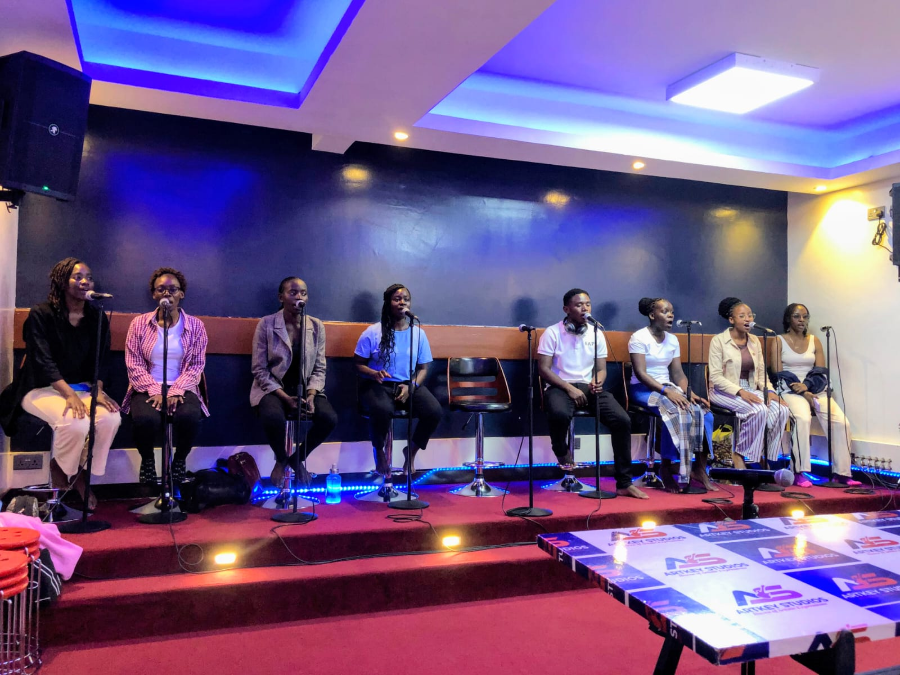
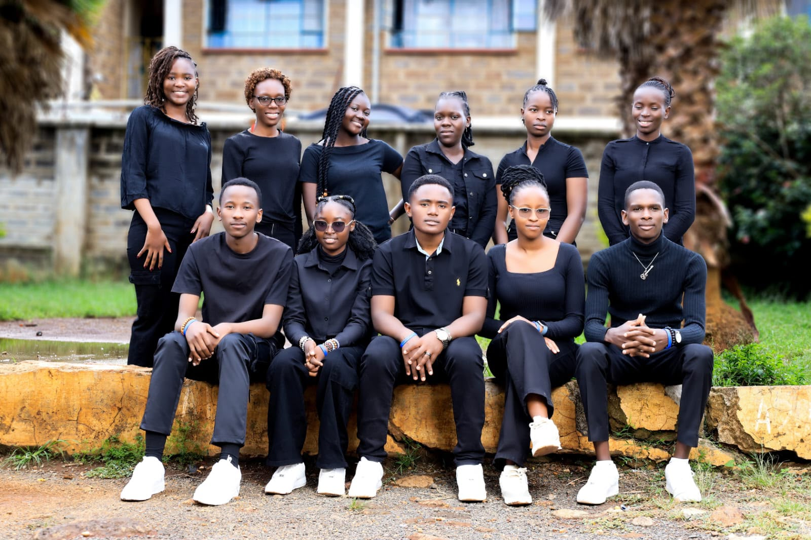
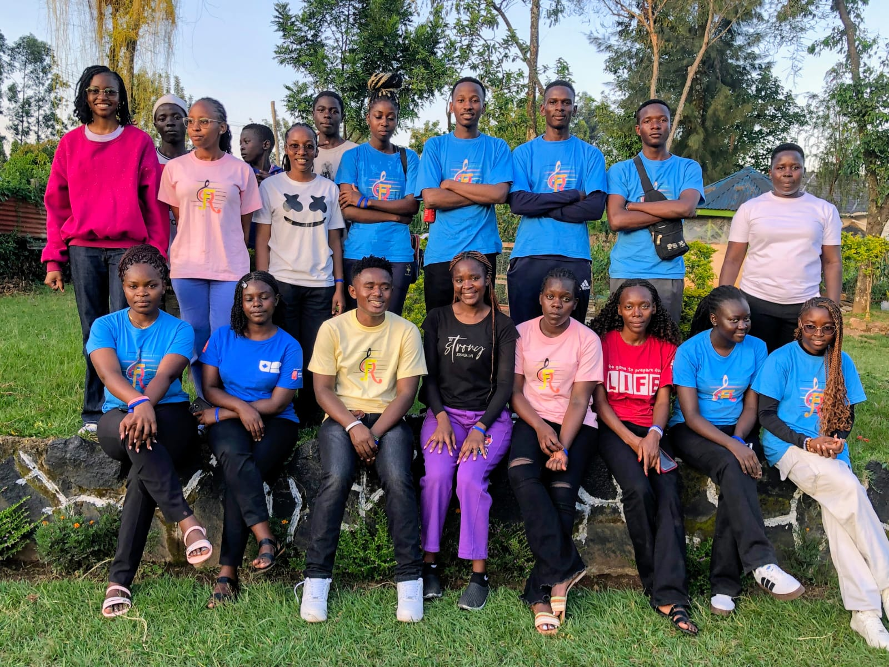
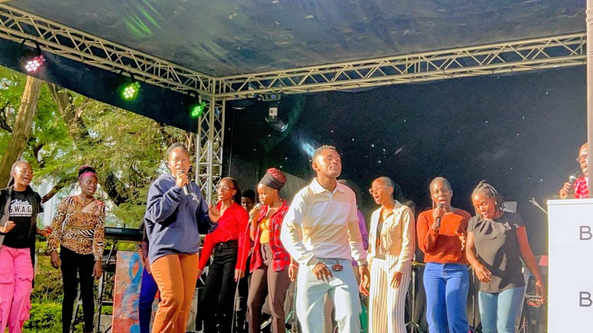
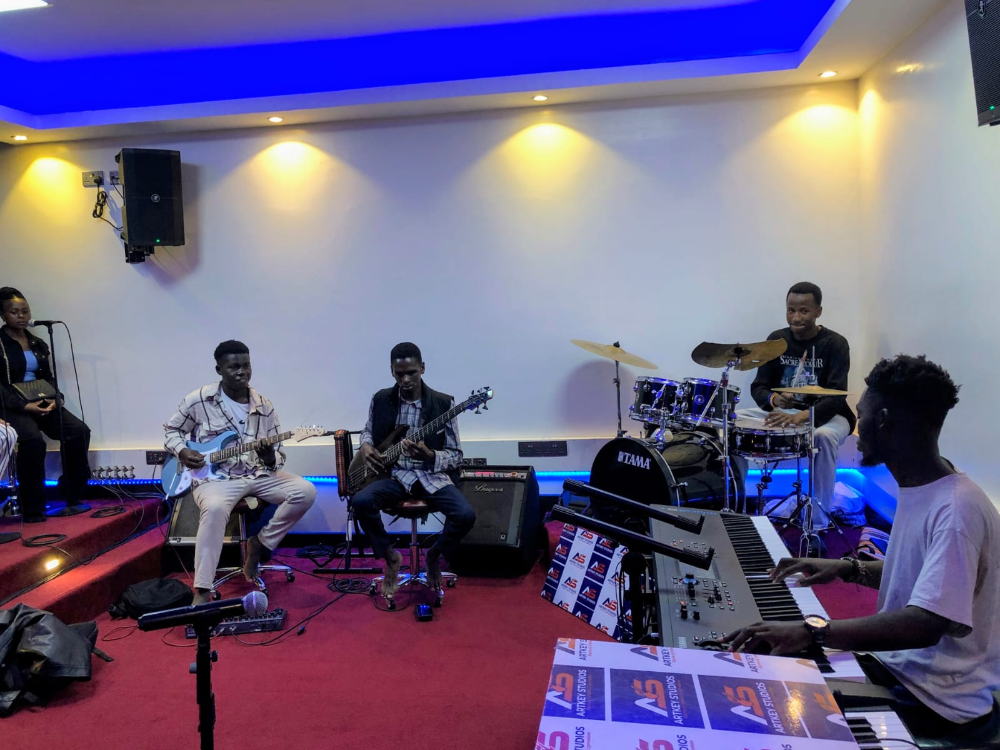
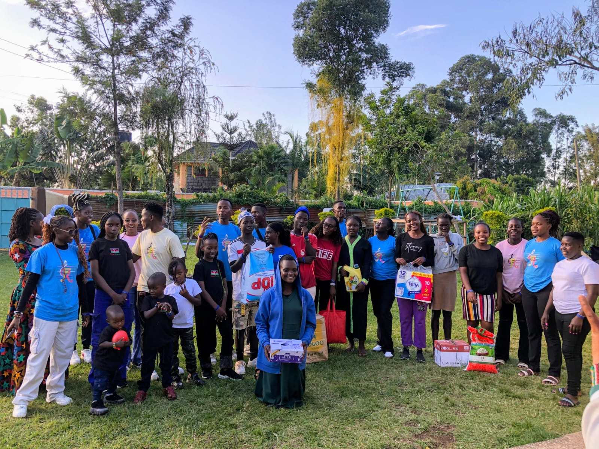
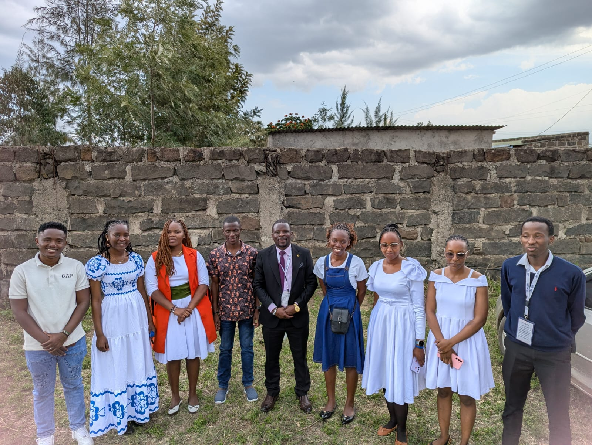

Friendship
Real relationships that make room for belonging and growth.
Where Music Meets Purpose.
We are more than a sound. We are a story of friendship, faith, worship and a generation choosing to live for something greater than itself.
Before the stages, before the songs and before the moments that would bring us together in worship, there was friendship. There were conversations, shared dreams, laughter, prayer and a growing desire to serve God with the gifts He had placed in our hands.
What began among friends gradually grew into a shared calling. Music became more than something we loved; it became a language through which we could express our faith, encourage others and point hearts back to Christ.
The name Rafiki Zespół carries the spirit of friendship and togetherness. It reflects the belief that purpose grows when people walk together, serve faithfully and make room for something bigger than themselves.

The music brings us together, but the relationships make the journey meaningful. We are learning, growing, serving and becoming better together — through the beautiful moments and the difficult ones.

Real relationships that make room for belonging and growth.
Different gifts, one desire to honour God.

A community shaped by faith, service and encouragement.
We believe that music can open hearts, strengthen faith and create moments in which people encounter the hope of Christ.
“For when David had served God's purpose in his own generation, he fell asleep.”Acts 13:36 · Our foundation
Acts 13:36 reminds us that a life becomes meaningful when it serves God's purpose in its own generation. This truth shapes how we approach our music, our relationships and our ministry.
We do not want to make music simply to be heard. We want our sound to carry a message of hope, our worship to point to Jesus, and our lives to reflect the love we sing about.
Every rehearsal, every invitation, every outreach and every song is an opportunity to serve with sincerity and faithfulness.
Our story is written in more than performances. It lives in the places we serve, the people we encourage and the moments we share with others.

Sharing music that adds warmth, meaning and joy to the milestones that matter in people's lives.

Coming together through music, fellowship and shared experiences that strengthen relationships and faith.

Taking time to encourage, listen, share love and remind others that they are seen and valued.

Using our gifts to serve churches, encourage believers and create space for meaningful worship encounters.
We are grateful for where the story began, but we believe there is still more to build, more people to reach and more purpose to fulfil.
Developing music, worship experiences and storytelling that communicate faith with excellence, authenticity and creativity.
Encouraging young people to discover their gifts, grow in character and use their talents in service of God's purpose.
Building meaningful partnerships and creating opportunities to serve, connect and bring encouragement beyond the stage.
As the journey grows, we want the heart behind it to remain clear. These are the values that guide how we worship, serve and walk together.
We offer our gifts with humility, excellence and a heart that seeks to honour God above recognition.
We want our music, decisions and relationships to contribute meaningfully to God's purpose in our generation.
We choose compassion, unity, friendship and service, remembering the people behind every moment.
To spread the message of Christ through heartfelt music, worship encounters and youth-centered outreach that inspire hope, faith and godly living.
To raise a generation of young believers who find purpose, identity and fulfillment in Christ through the transforming power of music and worship.
No meaningful journey is built by one person. Rafiki Zespół is shaped by the people who pray with us, serve alongside us, open doors, share their gifts and believe in the vision.
We welcome genuine connections with churches, creatives, organisations, volunteers and partners who share a heart for faith, music, young people and community impact.
Perhaps your place in this story is to worship with us, invite us, serve alongside us, partner with the vision or simply share the message with someone who needs encouragement. There is room to walk together.
Rafiki Zespół — Where Music Meets Purpose.